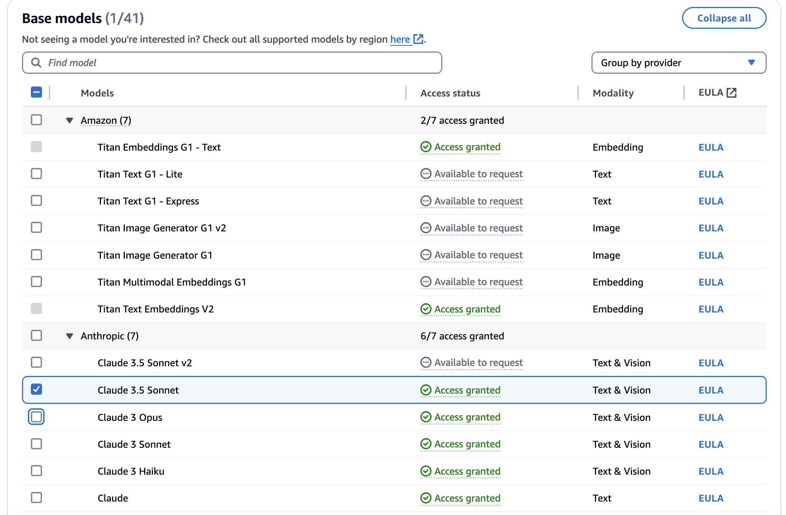
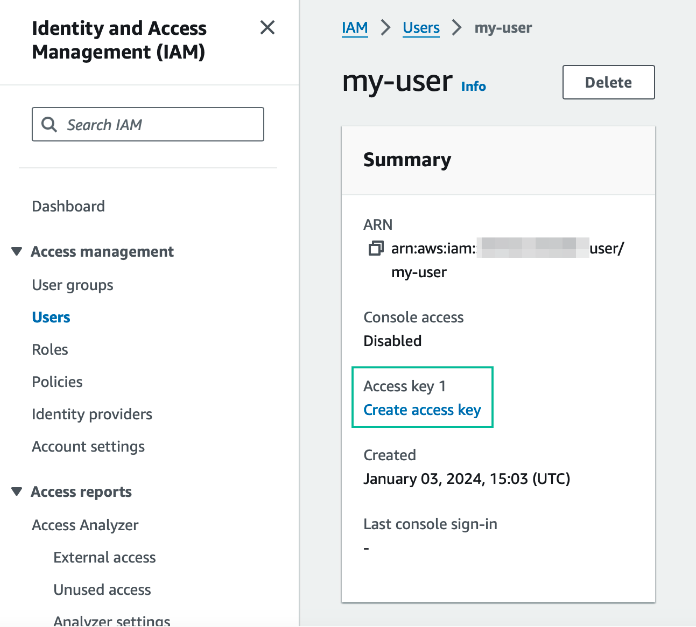
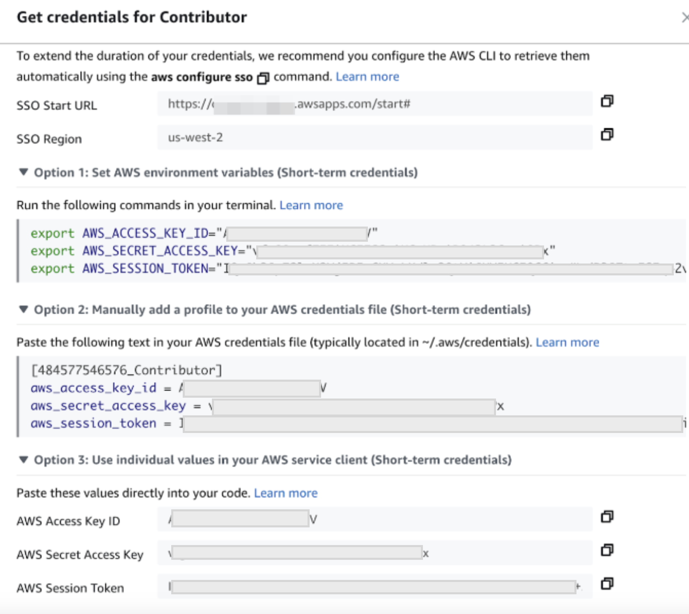

⏱️ Before You Begin
Estimated time: 10 minutes
What You'll Need
- A web browser (Chrome, Firefox, or Edge recommended)
- An email address for creating accounts
- Access to the AWS Workshop Studio environment (provided by instructors)
Step 1: Create a Snowflake Trial Account
Snowflake offers a free 30-day trial with $400 in credits. This is more than enough for our workshop.
Go to the Snowflake Trial Page
Click the button below to open the Snowflake trial signup page in a new tab:
Create Snowflake Trial Account →Fill Out the Signup Form
Enter your details:
- First Name & Last Name: Your real name
- Email: Use a valid email you can access
- Company: Your company or "Personal"
- Country: Select your country
Choose Your Cloud Provider and Region
- Cloud Provider: Amazon Web Services (AWS)
- Region: US West (Oregon) -
us-west-2 - Snowflake Edition: Enterprise (default for trial)
Complete Registration
- Check your email for a verification link
- Click the link to activate your account
- Set a secure password when prompted
Log In to Snowsight
After activation, you'll be redirected to Snowsight (Snowflake's web interface). Bookmark this URL—you'll need it throughout the workshop!
Step 2: Find Your Snowflake Account Identifier
You need to provide your Snowflake account identifier so workshop data can be shared with you.
Open Account Menu
In Snowsight, click on your account name in the bottom-left corner of the screen.
Copy Your Account Identifier
Look for your Account Identifier. It will look something like:
XXXXXXX-YY12345Or for some accounts:
xy12345.us-west-2.awsClick the copy icon next to it or manually select and copy the text.
SELECT CURRENT_ACCOUNT();Step 3: Register for the Workshop
Submit your Snowflake account identifier so we can share workshop data with your account.
In the form, you'll provide:
- Your name
- Your email address
- Your Snowflake account identifier (from Step 2)
Step 4: AWS Workshop Studio Access
Your AWS environment will be provided by the workshop organizers through AWS Workshop Studio.
Join Workshop Studio
You will receive an event code from your instructor. Go to:
Join Workshop Studio →Sign In with Email OTP
- Select "Email One-Time Password (OTP)"
- Enter your email address
- Check your email for the 9-digit passcode
- Enter the passcode to sign in
Enter Event Access Code
If prompted, enter the event access code provided by your instructor.
Access AWS Console
After joining, click "Open AWS Console" to access your temporary AWS account.
us-west-2 (Oregon) for all AWS services in this workshop.
Step 5: AWS Environment Setup
Configure Amazon Bedrock model access and generate AWS credentials for the workshop.
5.1 Enable Bedrock Model Access
Navigate to Amazon Bedrock
In the AWS Console, search for Amazon Bedrock and open the service.
Request Model Access
- Click on Model access in the left sidebar
- Click Manage model access
- Find Anthropic section and select Claude 3.5 Sonnet
- Click Request model access

5.2 Create IAM User for API Access
You need AWS access keys to allow Snowflake to call the Bedrock Agent. Follow these steps:
Open IAM Console
In the AWS Console, search for IAM and open the service. Click on Users under "Access management".
Create a New User
- Click Create user
- Enter a user name (e.g.,
workshop-user) - Click Next
Set Permissions
- Select Attach policies directly
- Search for and select AdministratorAccess
- Click Next, then Create user
Generate Access Keys
- Click on the user you just created
- Go to the Security credentials tab
- Under "Access keys", click Create access key
- Select Third-party service as the use case
- Check the confirmation box and click Next
- Click Create access key

Save Your Credentials
Copy and save these values securely—you'll need them later:
- Access key ID
- Secret access key

Example: AWS credentials dialog showing access key, secret key, and session token options
✅ Prerequisites Checklist
Before proceeding, confirm you have completed:
- ☐ Created a Snowflake trial account
- ☐ Selected AWS as cloud provider with us-west-2 region
- ☐ Found your Snowflake account identifier
- ☐ Submitted the registration form
- ☐ Received AWS Workshop Studio access (or will receive at workshop start)
- ☐ Enabled Amazon Bedrock model access for Claude 3.5 Sonnet
- ☐ Created IAM user and saved access keys